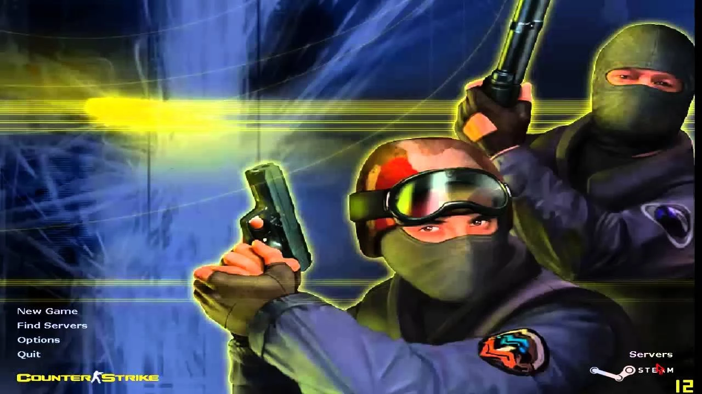

Counter-Strike (também abreviado por CS) é um popular jogo eletrônico de tiro em primeira pessoa.[2] Inicialmente criado como um "mod" de Half-Life para jogos online, foi desenvolvido por Minh Le e Jess Cliffe e depois adquirido pela Valve Corporation. Foi lançado em 1999, porém em 2000 ele começou a ser comercializado oficialmente, e posteriormente foram feitas versões para Xbox, Mac OS X e Linux.[3] Atualmente o jogo é jogado na versão Counter-Strike 2.[4]
O jogo é baseado em rodadas nas quais equipes de contraterroristas e terroristas combatem-se até a eliminação completa de um dos times, e tem como objetivo principal plantar e desarmar bombas, ou sequestrar e salvar reféns.
Counter-Strike foi um dos responsáveis pela massificação dos jogos por rede no início do século, sendo considerado o grande responsável pela popularização das LAN houses no mundo. O jogo é considerado o originador do esporte eletrônico, onde muitos jogadores levam-no a sério e recebem salários fixos, existindo até times profissionais, e que são patrocinados por grandes empresas como a Intel e a NVIDIA. Pelo mundo existem as ligas profissionais onde o Counter-Strike está presente, como o caso da CPL (que encerrou suas atividades em 2008), ESWC,[5] ESL,[6] WCG[7] e WEG.[8] No caso da ESWC funciona da seguinte forma: cada país tem as suas qualificações no qual qualquer clã pode ir a uma qualificação em uma lan house em qualquer parte do mesmo país, passando depois às melhores equipes, as melhores equipes de cada país encontram-se depois no complexo da ESWC, localizado em Paris, para disputar o lugar da melhor equipe do mundo de Counter-Strike.
Considerado um dos maiores e mais influentes jogos de todos os tempos, Counter-Strike foi aclamado pela mídia especializada desde a época do seu lançamento, recebendo notas 88/100 no site Metacritic e 89/100 no site GameRankings, além de receber 98% de análises positivas no Steam.[9]
A ação de Counter-Strike se desenvolve em rodadas em uma duração definida pelo criador do server, nas quais a equipe terrorista (ou TR) enfrenta a equipe contraterrorista (ou CT). A equipe vencedora é aquela que atende a todos os seus objetivos de vitória, de situação ou a eliminação de todos os jogadores do outro time. Se não houver nenhuma vitória direta de uma das duas equipes no final da rodada, a equipe que não fizer os seus objetivos perde por eliminação.
Para mais informações clique aqui!  Detalhes: Data de lançamento: 08 de novembro de 2000Esse texto
é menor,
itálico,
Negrito,
tachado e
Sublinhado